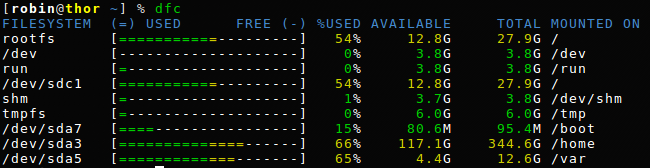
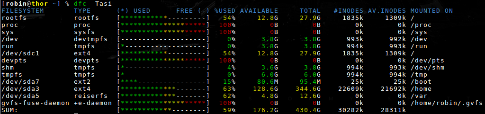

dfc wiki¶
Note: If you haven't already, you might want to have a look at the FAQ.
So dfc is a simple tool that display disk usage. Ok but how does it look like?
Here is the output of dfc on my laptop:
FILESYSTEM (=) USED FREE (-) %USED AVAILABLE TOTAL MOUNTED ON rootfs [===========---------] 54% 12.7G 27.9G / /dev [--------------------] 0% 3.8G 3.8G /dev run [=-------------------] 0% 3.8G 3.8G /run /dev/sdc1 [===========---------] 54% 12.7G 27.9G / shm [==------------------] 8% 3.5G 3.8G /dev/shm tmpfs [=-------------------] 0% 6.0G 6.0G /tmp /dev/sda7 [====----------------] 16% 80.5M 95.4M /boot /dev/sda3 [===============-----] 74% 91.1G 344.6G /home /dev/sda5 [===========---------] 52% 6.1G 12.6G /var /dev/sdb1 [===============-----] 73% 81.3G 297.8G /mnt/Videos
A screenshot is actually better to show color output:

Of course, there is some options available, dfc -h summarizes them:
Usage: dfc [OPTION(S)] [-c WHEN] [-e FORMAT] [-p FSNAME] [-q SORTBY] [-t FSTYPE] [-u UNIT]
Available options:
-a print all mounted filesystem
-b do not show the graph bar
-c choose color mode. Read the manpage
for details
-d show used size
-e export to specified format. Read the manpage
for details
-f disable auto-adjust mode (force display)
-h print this message
-i info about inodes
-l only show information about locally mounted
file systems
-m use metric (SI unit)
-M do not print "mounted on"
-n do not print header
-o show mount flags
-p filter by file system name. Read the manpage
for details
-q sort the output. Read the manpage
for details
-s sum the total usage
-t filter by file system type. Read the manpage
for details
-T show filesystem type
-u choose the unit in which
to show the values. Read the manpage
for details
-v print program version
-w use a wider bar
-W wide filename (un truncate)
If it is not clear enough, you can always read the manpage dfc(1) which you can find as a download link on the bottom of this page.
dfc -Tadisob:
FILESYSTEM TYPE %USED USED AVAILABLE TOTAL #INODES AV.INODES MOUNTED ON MOUNT OPTIONS rootfs rootfs 54% 13.8G 12.7G 27.9G 1835K 1294K / rw proc proc 100% 0B 0B 0B 0 0 /proc rw,nosuid,nodev,noexec,relatime sys sysfs 100% 0B 0B 0B 0 0 /sys rw,nosuid,nodev,noexec,relatime /dev devtmpfs 0% 0B 3.8G 3.8G 993K 992K /dev rw,nosuid,relatime,size=3974136k,nr_inodes=993534,mode=755 run tmpfs 0% 352.0K 3.8G 3.8G 994K 993K /run rw,nosuid,nodev,relatime,mode=755 /dev/sdc1 ext4 54% 13.8G 12.7G 27.9G 1835K 1294K / rw,noatime,user_xattr,acl,commit=600,barrier=1,data=ordered,discard devpts devpts 100% 0B 0B 0B 0 0 /dev/pts rw,nosuid,noexec,relatime,gid=5,mode=620,ptmxmode=000 shm tmpfs 8% 318.3M 3.5G 3.8G 994K 992K /dev/shm rw,nosuid,nodev,relatime tmpfs tmpfs 0% 20.0K 6.0G 6.0G 994K 994K /tmp rw,nosuid,nodev,noexec,relatime,size=6291456k /dev/sda7 ext2 16% 9.9M 80.5M 95.4M 25K 25K /boot rw,relatime,user_xattr,acl,barrier=1 /dev/sda3 ext4 74% 236.2G 91.1G 344.6G 22M 21M /home rw,noatime,user_xattr,acl,commit=600,barrier=1,data=ordered /dev/sda5 reiserfs 52% 6.5G 6.1G 12.6G 0 0 /var rw,noatime gvfs-fuse-daemon +fuse-daemon 100% 0B 0B 0B 0 0 /home/robin/.gvfs rw,nosuid,nodev,relatime,user_id=1000,group_id=100 /dev/sdb1 ext4 73% 201.6G 81.3G 297.8G 19M 19M /mnt/Videos rw,noatime,user_xattr,acl,commit=600,barrier=1,data=ordered SUM: 65% 472.2G 221.0G 728.2G 49M 47M
And a screenshot that shows how it looks like when some options are activated:

{kind=link}
{kind=link}
{kind=link}
{kind=link}